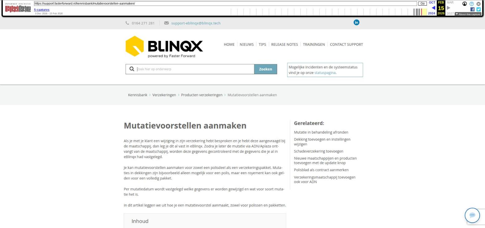

Mutatievoorstellen aanmaken

Tekstinhoud
Title: Mutatievoorstellen aanmaken | Support
URL: https://web.archive.org/web/20260215232558/https://support.fasterforward.nl/kennisbank/mutatievoorstellen-aanmaken/
Source element: <article>
---
Mutatievoorstellen aanmaken
Als je met je klant een wijziging in zijn verzekering hebt besproken en je hebt deze aangevraagd bij de maatschappij, dan leg je dit al vast in eBlinqx. Zodra je later de mutatie via ADN/Aplaza ontvangt van de maatschappij, worden deze gegevens gecontroleerd met de gegevens die je al in eBlinqx had vastgelegd.
Je kan mutatievoorstellen aanmaken voor zowel een polisdeel als een verzekeringspakket. Mutaties in dekkingen zijn bijvoorbeeld alleen mogelijk voor een polis, maar een royement kan ook gelden voor een volledig pakket.
Per mutatiedatum wordt vastgelegd welke gegevens er worden gewijzigd en wat voor soort mutatie het is.
In dit artikel leggen we uit hoe je een mutatievoorstel aanmaakt, zowel voor polissen en pakketten.
Inhoud
Mutatievoorstel voor één polisdeel aanmaken
Mutatievoorstel aanmaken
Vul gegevens van voorstel in
Rappeltaak – Herinnering instellen
Mutatie communiceren naar klant
Concept e-mail klaarzetten
Mutatievoorstellen aangemaakt door verwerking ADN en Aplaza
Polisnummer wijzigen
Maatschappij volgend of maatschappij controlerend
Mutaties in behandeling
Maatschappij volgend
Maatschappij controlerend
Mutatievoorstel voor pakket aanmaken
Royeren of opschorten
Pakket of polisonderdeel terug op lopend zetten
Overzicht verwerkte mutatievoorstellen
Overzicht met toekomstige mutaties bekijken
Mutatievoorstel voor één polisdeel aanmaken
Bij een wijziging op één polis van een pakket, maak je hiervoor één mutatievoorstel aan bij de polis. De volgende opties zijn mogelijk:
Mutatievoorstel aanmaken. Onderstaande opties zijn afhankelijk van de branche waaronder het product valt
Dekking toevoegen
Verzekerde objecten aanpassen
Verzekerde personen aanpassen
Premieopbouw aanpassen
Overige mutatie(s)
Polis royeren
Polis opschorten
Polis lopend zetten (deze optie komt zichtbaar als de polis geroyeerd is)
Volg de onderstaande stappen om een mutatievoorstel aan te maken.
Mutatievoorstel aanmaken
Ga in het klantdossier naar de verzekering waarvoor je een mutatievoorstel wilt aanmaken. Zodra je met je muis op het koffertje gaat staan, verschijnt er een menu. Klik hier op 'Mutatievoorstel aanmaken'.
Vul gegevens van voorstel in
Vul nu de mutatie in die je verwacht. In dit voorbeeld verwachten we een mutatie van de maatschappij die per 1 juli 2024 ingaat. Het verzekerd bedrag wordt gewijzigd naar € 30 en het eigen risico wordt aangepast naar € 5. Vul de gegevens in en klik op 'Opslaan'.
Rappeltaak – Herinnering instellen
Rappeltaak bestaand product
De verzekeraar moet voor de ingangsdatum de mutatie aan jou doorgeven via ADN/Aplaza. Om te controleren of hij dit tijdig doet, kan je er voor kiezen om een rappeltaak aan te maken. Standaard staat ingesteld dat de rappeltaak automatisch staat aangevinkt. Wil je dit niet dan kan de setting zo aangepast worden dat deze niet automatisch wordt aangevinkt. Stuur hiervoor een e-mail naar Support. Of je vinkt handmatig de rappeldatum uit. Wil je de taak op een andere datum dan pas je de datum aan.
De taak wordt direct aangemaakt en komt te staan op de rappeldatum die je hebt aangegeven. De taakverantwoordelijke van deze taak is degene die als behandelaar staat geselecteerd in het product.
Rappeltaak nieuwe polis
Bovenstaande geldt ook voor de rappeltaak die wordt aangemaakt als je een nieuwe polis aanmaakt alleen de ingangsdatum is van invloed op de datum van de taak. Bij het aanmaken van een nieuwe polis krijgt de rappeltaak als startdatum de ingangsdatum van de polis. Verander je tijdens het aanmaken van de nieuwe polis de ingangsdatum (deze staat onder het blok Looptijd) dan verandert de datum van de rappeldatum mee. Andersom is het niet zo, wijzig je de rappeldatum dan verandert de ingangsdatum niet. De taak wordt direct na het opslaan van de nieuwe polis aangemaakt. Wijzig je naderhand, na het aanmaken, de ingangsdatum van het polisonderdeel dan reageert de rappeltaak hier niet meer op.
Mutatie communiceren naar klant
Het is ook mogelijk om direct de workflow te starten via de knop 'Opslaan en workflow starten'. Hiermee kan je bijvoorbeeld direct de klant informeren dat je zijn mutatie hebt doorgegeven aan de maatschappij.
Als je een mutatie al had aangemaakt, kan je de workflow ook opstarten door op 'Workflows doorzetten' te klikken bij de polis of het pakket.
Let op: wanneer je net begint met mutatievoorstellen dan kan het zijn dat er nog een oude schadeworkflow onder de bestaande producten staat. Voor het juist opstellen van de e-mails is het belangrijk dat de nieuwe schadeworkflows onder het product komen te staan. Voordat je een mutatievoorstel aanmaakt in deze bestaande producten, is het goed om eerst te kiezen voor 'Workflows doorzetten'. Je krijgt dan de stap 'Klik hier om nieuw mutatievoorstellen workflow te starten'. Daarna kan je een mutatievoorstel aanmaken.
Concept e-mail klaarzetten
Vanuit de workflow is het mogelijk om een concept e-mail klaar te zetten.
Dit is een voorbeeld. Workflow is afhankelijk van jouw inrichting
Je ziet nu de concept e-mail in het 'Communicatie' tabblad van het klantdossier.
De informatie van de specifieke polis wordt met tags automatisch opgehaald en gevuld in deze e-mail. Gebruik hiervoor de tags die beginnen met 'offertedeel', zoals [offertedeel->polisnummer], [offertedeel->product->naam] of [offertedeel->product->categorie].
Mutatievoorstellen aangemaakt door verwerking ADN en Aplaza
Hierboven is beschreven hoe je zelf handmatig een mutatievoorstel kunt aanmaken. Door het verwerken van Aplaza en ADN berichten worden er ook mutatievoorstellen aangemaakt, bijvoorbeeld bij een prolongatie op hoofdvervaldatum.
Ook worden er voorstellen gemaakt bij bijvoorbeeld het royeren van een polis.
Polisnummer wijzigen
Een andere reden dat er een mutatievoorstel wordt aangemaakt, is bij het wijzigen van het polisnummer door de maatschappij. Maatschappijen hebben de mogelijkheid om in één ADN bericht het oude polisnummer en het nieuwe polisnummer mee te sturen. Wanneer in het ADN bericht het oude en nieuwe polisnummer wordt meegestuurd zal eBlinqx dit als een mutatievoorstel verwerken. In het mutatievoorstel in dit polisnummer zichtbaar. In de poliskaart komt dan het nieuwe polisnummer en eventuele andere wijzigingen, bijvoorbeeld dekkingen, te staan. Voor de duidelijkheid maken we in dit geval ook een (systeem)registratie aan.
Maatschappij volgend of maatschappij controlerend
Er zijn twee werkwijzen hoe om te gaan met mutatievoorstellen en mutatieconflicten, namelijk maatschappij volgend en maatschappij controlerend. Bij maatschappij volgend is de mutatie afgerond als de mutatie van de maatschappij is doorgevoerd. Er ontstaan minder mutatieconflicten. Bij maatschappij controlerend is de mutatie afgerond als de mutatie van de maatschappij is gecontroleerd en is goedgekeurd. Bij deze werkwijze ontstaan er meer mutatieconflicten, omdat je de maatschappij controleert. Ook ga je anders om met mutaties die in behandeling staan. Voordat je gaat werken met mutatieconflicten, geef je aan een medewerker van Blinqx door of je maatschappij volgend of controlerend wilt werken.
Mutaties in behandeling
Nadat je een mutatievoorstel hebt aangemaakt, zie je aan de rechterzijde van het product dat er een mutatie gepland staat op een bepaalde datum. Deze mutatie zie je ook terug in het tabblad 'Mutatievoorstellen'.
Maatschappij volgend
In de productkaart staat de mutatiedatum.
Bij het product op de startpagina van het dossier staat een klokje in het producticoon als er een mutatie in behandeling. Ook is hier de mutatiedatum terug te vinden. Het klokje in het producticoon is ook terug te zien in Track and Trace.
Maatschappij controlerend
Naast het klokje en de mutatiedatum zie je, als je werkt met de werkwijze maatschappij controlerend, ook aan het -icoon dat een mutatie 'In behandeling' is.
Betekenis van de kolommen:
Rappel: of er een herinneringstaak is/wordt aangemaakt. De rappeltaak wordt aangemaakt in de nacht van de rappeldatum. Als je voor die tijd hebt aangegeven dat de mutatie bevestigd is (via het zandlopericoon) dan wordt de taak niet aangemaakt.
Ontvangen via ADN: ADN bericht is binnengekomen en gekoppeld aan de polis (via ADN).
Gecontroleerd door kantoor: de maatschappij heeft de mutatie verwerkt. De gebruiker dient op het zandloper te klikken als deze het polisblad heeft gecontroleerd als dat is binnengekomen (via Aplaza of e-mail).
Klik op onderstaande knop voor meer informatie over het afronden van mutaties in behandeling.
MUTATIE IN BEHANDELING AFRONDEN
Mutatievoorstel voor pakket aanmaken
Het is ook mogelijk om een volledig verzekeringspakket in één keer aan te passen. Je hebt hiervoor de volgende opties:
Royement (alle lopende polissen royeren)
Opschorten (alle lopende polissen opschorten)
Hiervoor ga je in het product naar naar het koffertje.
Royeren of opschorten
Bij het royeren of opschorten van een pakket verschijnt er een pop-up. In deze pop-up kan je aangeven of het pakket direct geroyeerd dient te worden of vanaf een bepaalde datum. Om te controleren of hij dit tijdig doet, kan je er voor kiezen om een rappeltaak aan te maken. Standaard staat ingesteld dat de rappeltaak automatisch staat aangevinkt. Wil je dit niet dan kan de setting zo aangepast worden dat deze niet automatisch wordt aangevinkt. Of je vinkt handmatig de rappeldatum uit. Wil je de taak op een andere datum dan pas je de datum aan. Wanneer deze taak wordt aangemaakt is afhankelijk van de setting (zie hierboven). Bij 'maatschappij volgend' wordt de taak direct aangemaakt en komt te staan op de rappeldatum die je hebt aangegeven. Bij 'maatschappij controlerend' wordt de rappeltaak pas aangemaakt op de dag van de rappeldatum mits het voorstel niet is afgehandeld. De taakverantwoordelijke van deze taak is degene die als behandelaar staat geselecteerd in het product.
Deze wijziging is ook zichtbaar in het tabblad Mutatievoorstellen.
Pakket of polisonderdeel terug op lopend zetten
Het kan zijn dat een pakket en/of polisonderdeel geroyeerd is, maar dat deze terug actief worden. De status van het pakket en/of polisonderdeel staat dan nog op geroyeerd.
Door middel van een mutatievoorstel kan je het pakket/polisonderdeel weer terug op lopend zetten. Dit door te klikken op het koffertje en dan te kiezen voor 'Polis lopend zetten'. Deze optie is alleen zichtbaar wanneer het pakketonderdeel geroyeerd is.
Overzicht verwerkte mutatievoorstellen
Per klantdossier kan je alle mutatievoorstellen bekijken. In het tabblad 'Mutatievoorstellen' onder de verzekering zie je de reeds aangemaakt en verwerkte mutatievoorstellen. Via het filter kan je instellen welke mutatievoorstellen je wilt zien.
Hier zie je ook wanneer er een conflict is. Als je maatschappij controlerend werkt, zie je hier ook de kolommen Ontvangen via ADN en Gecontroleerd door kantoor terug met bijbehorende status (zandloper of vinkje). Ook hier kan je zandlopers afvinken.
Via het vergrootglas kan je verschillende informatie ophalen over het mutatievoorstel. In de pop-up zie je het laatst verwerkte mutatievoorstel vóór het gekozen mutatievoorstel, het gekozen mutatievoorstel en indien gewenst de huidige polis (deze kan je aan- of uitvinken). Onder het gekozen mutatievoorstel worden de velden gearceerd die verschillend zijn met het laatst verwerkte mutatievoorstel.
Overzicht met toekomstige mutaties bekijken
In het 'Overzicht toekomstige mutaties' zie je de toekomstige mutaties van alle verzekeringen in jouw eBlinqxomgeving. Aan de linkerkant filter en zoek je eenvoudig naar toekomstige mutaties.
Laatste update: 15 oktober 2025
Was deze informatie nuttig?
Ja Nee